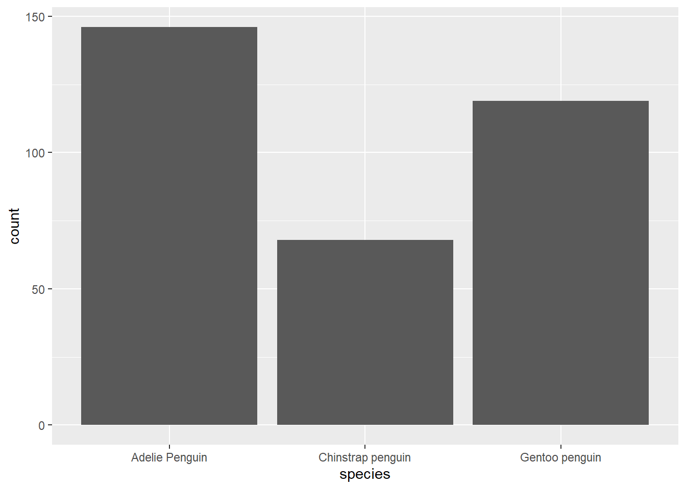
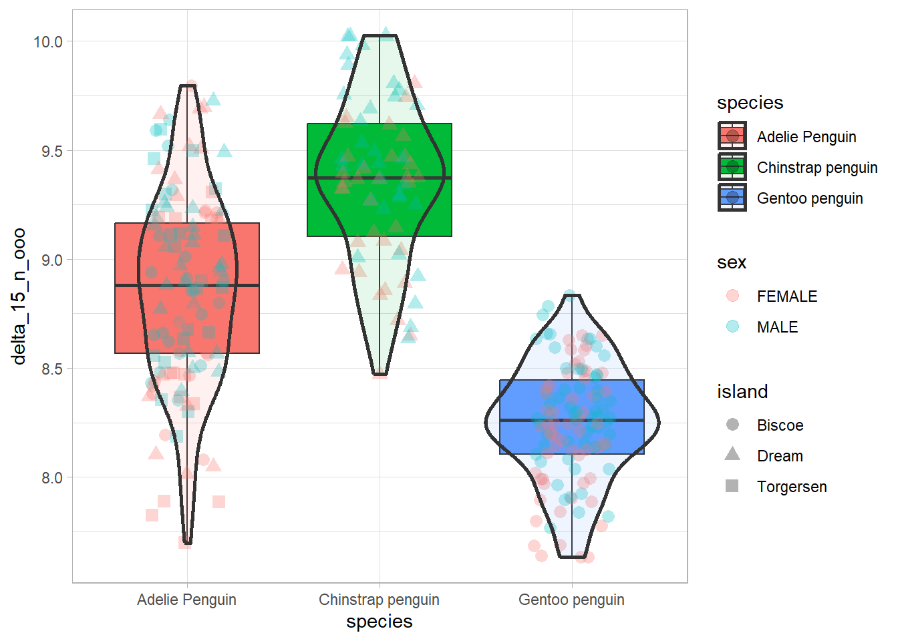

Chapter 4 Exploratory Data Analysis (EDA)
In Exploratory Data Analysis (EDA for short) we will want to explore our data. We usually start by getting summaries and plots that broadly summarise how our data is structured. We then proceed to more specific exploration of what variables interest us. There is no right way of doing EDA, and everyone does EDA slightly different. What matters in the end is that this part of your data analysis gives you a good glimpse about your data and potential targets to further explore and analyze. And of course, this will be a good time to put your plotting skills to test, and with R, you can do pretty much anything… and, again, I truly mean anything.
What is the data we will be working with? The data exemplified here comes from Dr. Kristen Gorman and the Palmer Station, Antarctica LTER, a member of the Long Term Ecological Research Network. It contains information about 344 penguins, across 3 different species of penguins, collected from 3 islands in the Palmer Archipelago, Antarctica.
Horst AM, Hill AP, Gorman KB (2020). palmerpenguins: Palmer Archipelago (Antarctica) penguin data. R package version 0.1.0. https://allisonhorst.github.io/palmerpenguins/
Now lets look at the data We can either show the first rows (or last rows) to get a general view on what the columns are and what the values associated with each columns are, or we can View the entire dataframe. Additionally we can also use several commands to provide us some more general info about the dataframe itself.
4.1 Loading data
penguins_raw <- palmerpenguins::penguins_raw
head(penguins_raw)## # A tibble: 6 × 17
## study…¹ Sampl…² Species Region Island Stage Indiv…³ Clutc…⁴ `Date Egg` Culme…⁵
## <chr> <dbl> <chr> <chr> <chr> <chr> <chr> <chr> <date> <dbl>
## 1 PAL0708 1 Adelie… Anvers Torge… Adul… N1A1 Yes 2007-11-11 39.1
## 2 PAL0708 2 Adelie… Anvers Torge… Adul… N1A2 Yes 2007-11-11 39.5
## 3 PAL0708 3 Adelie… Anvers Torge… Adul… N2A1 Yes 2007-11-16 40.3
## 4 PAL0708 4 Adelie… Anvers Torge… Adul… N2A2 Yes 2007-11-16 NA
## 5 PAL0708 5 Adelie… Anvers Torge… Adul… N3A1 Yes 2007-11-16 36.7
## 6 PAL0708 6 Adelie… Anvers Torge… Adul… N3A2 Yes 2007-11-16 39.3
## # … with 7 more variables: `Culmen Depth (mm)` <dbl>,
## # `Flipper Length (mm)` <dbl>, `Body Mass (g)` <dbl>, Sex <chr>,
## # `Delta 15 N (o/oo)` <dbl>, `Delta 13 C (o/oo)` <dbl>, Comments <chr>, and
## # abbreviated variable names ¹studyName, ²`Sample Number`, ³`Individual ID`,
## # ⁴`Clutch Completion`, ⁵`Culmen Length (mm)`# Use tails() if you want to see the last rowsThe str() command gives us some detail into the class of each column of the data frame, its length, its values, among others.
P.s., <dbl> means a numerical value with decimal points.
4.2 Checking data
str(penguins_raw)## tibble [344 × 17] (S3: tbl_df/tbl/data.frame)
## $ studyName : chr [1:344] "PAL0708" "PAL0708" "PAL0708" "PAL0708" ...
## $ Sample Number : num [1:344] 1 2 3 4 5 6 7 8 9 10 ...
## $ Species : chr [1:344] "Adelie Penguin (Pygoscelis adeliae)" "Adelie Penguin (Pygoscelis adeliae)" "Adelie Penguin (Pygoscelis adeliae)" "Adelie Penguin (Pygoscelis adeliae)" ...
## $ Region : chr [1:344] "Anvers" "Anvers" "Anvers" "Anvers" ...
## $ Island : chr [1:344] "Torgersen" "Torgersen" "Torgersen" "Torgersen" ...
## $ Stage : chr [1:344] "Adult, 1 Egg Stage" "Adult, 1 Egg Stage" "Adult, 1 Egg Stage" "Adult, 1 Egg Stage" ...
## $ Individual ID : chr [1:344] "N1A1" "N1A2" "N2A1" "N2A2" ...
## $ Clutch Completion : chr [1:344] "Yes" "Yes" "Yes" "Yes" ...
## $ Date Egg : Date[1:344], format: "2007-11-11" "2007-11-11" ...
## $ Culmen Length (mm) : num [1:344] 39.1 39.5 40.3 NA 36.7 39.3 38.9 39.2 34.1 42 ...
## $ Culmen Depth (mm) : num [1:344] 18.7 17.4 18 NA 19.3 20.6 17.8 19.6 18.1 20.2 ...
## $ Flipper Length (mm): num [1:344] 181 186 195 NA 193 190 181 195 193 190 ...
## $ Body Mass (g) : num [1:344] 3750 3800 3250 NA 3450 ...
## $ Sex : chr [1:344] "MALE" "FEMALE" "FEMALE" NA ...
## $ Delta 15 N (o/oo) : num [1:344] NA 8.95 8.37 NA 8.77 ...
## $ Delta 13 C (o/oo) : num [1:344] NA -24.7 -25.3 NA -25.3 ...
## $ Comments : chr [1:344] "Not enough blood for isotopes." NA NA "Adult not sampled." ...
## - attr(*, "spec")=
## .. cols(
## .. studyName = col_character(),
## .. `Sample Number` = col_double(),
## .. Species = col_character(),
## .. Region = col_character(),
## .. Island = col_character(),
## .. Stage = col_character(),
## .. `Individual ID` = col_character(),
## .. `Clutch Completion` = col_character(),
## .. `Date Egg` = col_date(format = ""),
## .. `Culmen Length (mm)` = col_double(),
## .. `Culmen Depth (mm)` = col_double(),
## .. `Flipper Length (mm)` = col_double(),
## .. `Body Mass (g)` = col_double(),
## .. Sex = col_character(),
## .. `Delta 15 N (o/oo)` = col_double(),
## .. `Delta 13 C (o/oo)` = col_double(),
## .. Comments = col_character()
## .. )# You can also use glimpse() from the dplyr package
# Or you can use the skim() function from the skimr packageThe summary command gives us a summary of each column, with, in case of numeric, the distribution parameters of those values, and in the case of categorical columns, the count of each value while also highlighting always the number of NA entries.
summary(penguins_raw)## studyName Sample Number Species Region
## Length:344 Min. : 1.00 Length:344 Length:344
## Class :character 1st Qu.: 29.00 Class :character Class :character
## Mode :character Median : 58.00 Mode :character Mode :character
## Mean : 63.15
## 3rd Qu.: 95.25
## Max. :152.00
##
## Island Stage Individual ID Clutch Completion
## Length:344 Length:344 Length:344 Length:344
## Class :character Class :character Class :character Class :character
## Mode :character Mode :character Mode :character Mode :character
##
##
##
##
## Date Egg Culmen Length (mm) Culmen Depth (mm) Flipper Length (mm)
## Min. :2007-11-09 Min. :32.10 Min. :13.10 Min. :172.0
## 1st Qu.:2007-11-28 1st Qu.:39.23 1st Qu.:15.60 1st Qu.:190.0
## Median :2008-11-09 Median :44.45 Median :17.30 Median :197.0
## Mean :2008-11-27 Mean :43.92 Mean :17.15 Mean :200.9
## 3rd Qu.:2009-11-16 3rd Qu.:48.50 3rd Qu.:18.70 3rd Qu.:213.0
## Max. :2009-12-01 Max. :59.60 Max. :21.50 Max. :231.0
## NA's :2 NA's :2 NA's :2
## Body Mass (g) Sex Delta 15 N (o/oo) Delta 13 C (o/oo)
## Min. :2700 Length:344 Min. : 7.632 Min. :-27.02
## 1st Qu.:3550 Class :character 1st Qu.: 8.300 1st Qu.:-26.32
## Median :4050 Mode :character Median : 8.652 Median :-25.83
## Mean :4202 Mean : 8.733 Mean :-25.69
## 3rd Qu.:4750 3rd Qu.: 9.172 3rd Qu.:-25.06
## Max. :6300 Max. :10.025 Max. :-23.79
## NA's :2 NA's :14 NA's :13
## Comments
## Length:344
## Class :character
## Mode :character
##
##
##
## At this phase you should start assessing your data and will probably need to modify the dataframe a bit. Most of the tools you need were already introduced in Chapter 2, but you will learn some new ones here along the way. First though, lets get familiarized with the data by reading its description.
So a brief intro to this data. This data measures structural size of adult male and female Adélie penguins (Pygoscelis adeliae) nesting along the Palmer Archipelago near Palmer Station. It has 17 columns, namely:
studyName: Sampling expedition from which data were collected, generated, etc.
Sample Number: an integer denoting the continuous numbering sequence for each sample
Species: a character string denoting the penguin species
Region: a character string denoting the region of Palmer LTER sampling grid
Island: a character string denoting the island near Palmer Station where samples were collected
Stage: a character string denoting reproductive stage at sampling
Individual ID: a character string denoting the unique ID for each individual in dataset
Clutch Completion: a character string denoting if the study nest observed with a full clutch, i.e., 2 eggs
Date Egg: a date denoting the date study nest observed with 1 egg (sampled)
Culmen Length: a number denoting the length of the dorsal ridge of a bird’s bill (millimeters)
Culmen Depth: a number denoting the depth of the dorsal ridge of a bird’s bill (millimeters)
Flipper Length: an integer denoting the length penguin flipper (millimeters)
Body Mass: an integer denoting the penguin body mass (grams)
Sex: a character string denoting the sex of an animal
Delta 15 N: a number denoting the measure of the ratio of stable isotopes 15N:14N
Delta 13 C: a number denoting the measure of the ratio of stable isotopes 13C:12C
Comments: a character string with text providing additional relevant information for data
There is also a subsetted (cleaner) version with just the species, island, size (flipper length, body mass, bill dimensions) and sex variables. We will, however, work with the raw version and transform it ourselves making it cleaner and easier to explore and gather some initial insights about the data.
head(penguins_raw)## # A tibble: 6 × 17
## study…¹ Sampl…² Species Region Island Stage Indiv…³ Clutc…⁴ `Date Egg` Culme…⁵
## <chr> <dbl> <chr> <chr> <chr> <chr> <chr> <chr> <date> <dbl>
## 1 PAL0708 1 Adelie… Anvers Torge… Adul… N1A1 Yes 2007-11-11 39.1
## 2 PAL0708 2 Adelie… Anvers Torge… Adul… N1A2 Yes 2007-11-11 39.5
## 3 PAL0708 3 Adelie… Anvers Torge… Adul… N2A1 Yes 2007-11-16 40.3
## 4 PAL0708 4 Adelie… Anvers Torge… Adul… N2A2 Yes 2007-11-16 NA
## 5 PAL0708 5 Adelie… Anvers Torge… Adul… N3A1 Yes 2007-11-16 36.7
## 6 PAL0708 6 Adelie… Anvers Torge… Adul… N3A2 Yes 2007-11-16 39.3
## # … with 7 more variables: `Culmen Depth (mm)` <dbl>,
## # `Flipper Length (mm)` <dbl>, `Body Mass (g)` <dbl>, Sex <chr>,
## # `Delta 15 N (o/oo)` <dbl>, `Delta 13 C (o/oo)` <dbl>, Comments <chr>, and
## # abbreviated variable names ¹studyName, ²`Sample Number`, ³`Individual ID`,
## # ⁴`Clutch Completion`, ⁵`Culmen Length (mm)`4.3 Cleaning
4.3.1 Cleaning col. names
So first off, we might want to clean the data.
One thing we often do is rename variables (in this case columns).
We can do so simply with the use of the rename() function from dplyr.
rename(): changes the names of individual variables using new_name = old_name syntax.
rename_with(): renames columns using a function.
# Lets say I want to rename "Individual ID" to "ID".
penguins <- penguins_raw %>%
rename('ID' = 'Individual ID')Now we might want to make every column, except ID, lower case, substitute spaces with “_” and remove “()”.
penguins <- penguins %>%
rename_with(tolower) %>% # lower-case every column
rename_with(toupper, starts_with('ID')) %>% # up-case column starting with "ID"
rename_with(~gsub(" ", "_", .x)) %>% # subs every space (" ") with no space ("_")
rename_with(~gsub("\\(", "", .x)) %>% #removes every "("
rename_with(~gsub("\\)", "", .x)) %>% # removes every ")"
rename_with(~gsub("/" ,"", .x)) # removes /We could also skip a few things and be less specific, but instead use only the following function from the “janitor” package
penguins %>%
janitor::clean_names()## # A tibble: 344 × 17
## studyn…¹ sampl…² species region island stage id clutc…³ date_egg culme…⁴
## <chr> <dbl> <chr> <chr> <chr> <chr> <chr> <chr> <date> <dbl>
## 1 PAL0708 1 Adelie… Anvers Torge… Adul… N1A1 Yes 2007-11-11 39.1
## 2 PAL0708 2 Adelie… Anvers Torge… Adul… N1A2 Yes 2007-11-11 39.5
## 3 PAL0708 3 Adelie… Anvers Torge… Adul… N2A1 Yes 2007-11-16 40.3
## 4 PAL0708 4 Adelie… Anvers Torge… Adul… N2A2 Yes 2007-11-16 NA
## 5 PAL0708 5 Adelie… Anvers Torge… Adul… N3A1 Yes 2007-11-16 36.7
## 6 PAL0708 6 Adelie… Anvers Torge… Adul… N3A2 Yes 2007-11-16 39.3
## 7 PAL0708 7 Adelie… Anvers Torge… Adul… N4A1 No 2007-11-15 38.9
## 8 PAL0708 8 Adelie… Anvers Torge… Adul… N4A2 No 2007-11-15 39.2
## 9 PAL0708 9 Adelie… Anvers Torge… Adul… N5A1 Yes 2007-11-09 34.1
## 10 PAL0708 10 Adelie… Anvers Torge… Adul… N5A2 Yes 2007-11-09 42
## # … with 334 more rows, 7 more variables: culmen_depth_mm <dbl>,
## # flipper_length_mm <dbl>, body_mass_g <dbl>, sex <chr>,
## # delta_15_n_ooo <dbl>, delta_13_c_ooo <dbl>, comments <chr>, and abbreviated
## # variable names ¹studyname, ²sample_number, ³clutch_completion,
## # ⁴culmen_length_mm4.3.2 Date
One interesting and somewhat difficult (sometimes) parameter to adjust is turning a column that is often a character to a date format.
In this case is simple, but I give you some examples below for you to work your way through other types of transformations.
penguins$date_egg <- as.Date(penguins$date_egg)Now here are other examples, aside from this data.
characters <- c("1jan1960", "2jan1960", "31mar1960", "30jul1960")
dates <- as.Date(characters, "%d%b%Y")
dates## [1] "1960-01-01" "1960-01-02" "1960-03-31" "1960-07-30"characters <- c("02/27/92", "02/27/92", "01/14/92", "02/28/92", "02/01/92")
dates <- as.Date(characters, "%m/%d/%y")
dates## [1] "1992-02-27" "1992-02-27" "1992-01-14" "1992-02-28" "1992-02-01"Check also these link for better examples. https://www.r-bloggers.com/2013/08/date-formats-in-r/
4.3.3 Cleaning some columns
In particular, I want to remove the species latin name from the “species” column as well as the parenthesis.
Now this may seem simple, but messing with characters is one of those things that having an internet connection is key, since base commands, in my opinion, are not at all clear or simple.
The command below simple means replace the species column with a new one (with the same name), but in this one replace all the text that is between the parenthesis (including the parenthesis themselves) " *\\(.*?\\) *" and replace by nothing "".
penguins <- penguins %>%
mutate(species = gsub(" *\\(.*?\\) *", "", species))Another thing that jumps to sight is the “stage” column, which appears to be telling the same thing always. Lets check.
table(penguins$stage)##
## Adult, 1 Egg Stage
## 344unique(penguins$stage)## [1] "Adult, 1 Egg Stage"Since its all the same, I can choose to remove it.
penguins$stage <- NULL4.3.4 Dealing with NA values
Now lets deal with NA values.
First lets quickly identify which columns have NA values, and how many of them each one has.
We could just look at the summary(penguins), or we could do this with other base R commands, like so:
sapply(penguins, function(x) sum(is.na(x)))## studyname sample_number species region
## 0 0 0 0
## island ID clutch_completion date_egg
## 0 0 0 0
## culmen_length_mm culmen_depth_mm flipper_length_mm body_mass_g
## 2 2 2 2
## sex delta_15_n_ooo delta_13_c_ooo comments
## 11 14 13 290apply(is.na(penguins), 2, sum)## studyname sample_number species region
## 0 0 0 0
## island ID clutch_completion date_egg
## 0 0 0 0
## culmen_length_mm culmen_depth_mm flipper_length_mm body_mass_g
## 2 2 2 2
## sex delta_15_n_ooo delta_13_c_ooo comments
## 11 14 13 290Note: Go to https://www.guru99.com/r-apply-sapply-tapply.html to better understand “apply” and other functions.
Or we can do something more elegant and use some packages that show us, with graphics, where our NAs are. Here are a few examples that I took from a quick google search:
# Alternative 1
library(naniar)## Warning: package 'naniar' was built under R version 4.2.2library(UpSetR)## Warning: package 'UpSetR' was built under R version 4.2.2penguins %>%
as_shadow_upset() %>%
upset()
# Alternative n2
library(visdat)## Warning: package 'visdat' was built under R version 4.2.2vis_miss(penguins)## Warning: `gather_()` was deprecated in tidyr 1.2.0.
## ℹ Please use `gather()` instead.
## ℹ The deprecated feature was likely used in the visdat package.
## Please report the issue at <https://github.com/ropensci/visdat/issues>.
Now, we need to decide what to do with these NA values. We can see below that two penguins have data missing from their base features (e.g., culmen_lenght and body_mass). Also, a few of them don’t have information regarding sex. Since these are critical features, I’m gonna go ahead and eliminate these entries. We can do so by several ways, but below you have two examples on how to eliminate NA values.
# Example 1
penguins <- penguins %>%
filter(!is.na(culmen_length_mm), # show only rows that are not NA in the culmen_length_mm column
!is.na(sex)) # show only rows that are not NA in the sex column
# Example 2
penguins <- penguins %>%
drop_na(culmen_length_mm, sex)Now for some final touches, I will transform the body mass column’s units from grams to kilograms.
# Converting body_mass from grams to kg
penguins <- penguins %>%
mutate(body_mass = body_mass_g/1000) %>%
mutate(body_mass_g = NULL) # removing old columnTo finish this data cleaning, its important to point out that we could have just done everything in one go, as exemplified below. Although as you can see, when dealing with too many things, its usually best to separate adjustments per chunks.
penguins <- penguins_raw %>%
rename('ID' = 'Individual ID') %>%
rename_with(tolower) %>% # lower-case every column
rename_with(toupper, starts_with('ID')) %>% # up-case column starting with "ID"
rename_with(~gsub(" ", "_", .x)) %>% # subs every space (" ") with no space ("_")
rename_with(~gsub("\\(", "", .x)) %>% #removes every "("
rename_with(~gsub("\\)", "", .x)) %>% # removes every ")"
rename_with(~gsub("/" ,"", .x)) %>% # removes /
mutate(date_egg = as.Date(date_egg)) %>% # turns the column to data format
mutate(species = gsub(" *\\(.*?\\) *", "", species)) %>% # removes text between parenthesis in species
mutate(stage = NULL) %>% # removes stage column
filter(!is.na(culmen_length_mm), !is.na(sex)) %>% # removes NA rows from these 2 columns
mutate(body_mass = body_mass_g/1000) %>% # transforms body_mass_g column to kilograms
mutate(body_mass_g = NULL)4.4 Summarising
Before we start drawing graphs left and right, its important to also explore the data with data summaries (in text format). As mentioned, from my perspective, EDA isn’t an exact science, in a sense that there is no appropriate set of measures to explore. Knowing what to do comes from both a) knowing your data, b) what your objectives are and c) experience. Below I’m going to try to cover some aspects of EDA (first in text than with plots) that I would do when analysing this data. Lets start…
So, how many observations per specie are there in the data?
penguins %>%
count(species)## # A tibble: 3 × 2
## species n
## <chr> <int>
## 1 Adelie Penguin 146
## 2 Chinstrap penguin 68
## 3 Gentoo penguin 119Alternatively, we can use the functions tabyl() and adorn_totals() from the janitor package and create a more elaborate summary with percentages and totals.
penguins %>%
janitor::tabyl(species) %>%
janitor::adorn_totals()## species n percent
## Adelie Penguin 146 0.4384384
## Chinstrap penguin 68 0.2042042
## Gentoo penguin 119 0.3573574
## Total 333 1.0000000Alright, now lets say we want to know how they are distributed across islands
penguins %>%
group_by(island) %>%
count(species)## # A tibble: 5 × 3
## # Groups: island [3]
## island species n
## <chr> <chr> <int>
## 1 Biscoe Adelie Penguin 44
## 2 Biscoe Gentoo penguin 119
## 3 Dream Adelie Penguin 55
## 4 Dream Chinstrap penguin 68
## 5 Torgersen Adelie Penguin 47What seem to be the main problems presented in the observation column?
penguins %>%
filter(!is.na(comments)) %>%
count(comments)## # A tibble: 4 × 2
## comments n
## <chr> <int>
## 1 Nest never observed with full clutch. 34
## 2 Nest never observed with full clutch. Not enough blood for isotopes. 1
## 3 No delta15N data received from lab. 1
## 4 Not enough blood for isotopes. 7Since we spotted that some comments only appear very often we could quickly do some data cleaning again.
Namely we might wanna combine certain levels of a factor or characters that are less represented (compared to other levels) together, instead of representing each. In this case we would combine less represented types of comments into a single label (e.g., “OtherProblems”).
For that we could use fct_lump().
This function “lumps” (joins) together factors or characters with little representation.
We just need to say which column we want to use this on, and we can define other parameters of interest.
These are:
n: (specifying which of the most common to preserve, default being 1). If I say
n = 2only the two most common comments will be preserved, with the rest being labeled as “OtherProblems”.p: Alternative to “n” in which we can specify to preserve only the levels/characters which have at least a proportion of x. Again, if we said p = 0.2, only the comments which are represented in 20% of the data would be kept.
other_level: Here you set the name attributed to the lumped factors. In this case we say “OtherProblems”.
penguins %>%
mutate(comments2 = fct_lump(f=comments, n = 1, other_level = 'OtherProblems')) %>%
head()## # A tibble: 6 × 17
## study…¹ sampl…² species region island ID clutc…³ date_egg culme…⁴ culme…⁵
## <chr> <dbl> <chr> <chr> <chr> <chr> <chr> <date> <dbl> <dbl>
## 1 PAL0708 1 Adelie… Anvers Torge… N1A1 Yes 2007-11-11 39.1 18.7
## 2 PAL0708 2 Adelie… Anvers Torge… N1A2 Yes 2007-11-11 39.5 17.4
## 3 PAL0708 3 Adelie… Anvers Torge… N2A1 Yes 2007-11-16 40.3 18
## 4 PAL0708 5 Adelie… Anvers Torge… N3A1 Yes 2007-11-16 36.7 19.3
## 5 PAL0708 6 Adelie… Anvers Torge… N3A2 Yes 2007-11-16 39.3 20.6
## 6 PAL0708 7 Adelie… Anvers Torge… N4A1 No 2007-11-15 38.9 17.8
## # … with 7 more variables: flipper_length_mm <dbl>, sex <chr>,
## # delta_15_n_ooo <dbl>, delta_13_c_ooo <dbl>, comments <chr>,
## # body_mass <dbl>, comments2 <fct>, and abbreviated variable names
## # ¹studyname, ²sample_number, ³clutch_completion, ⁴culmen_length_mm,
## # ⁵culmen_depth_mmAnyway, back to exploring the data…
Now lets ask the mean for each specie across all columns in the dataframe, where the values are numeric.
We can do this, by simply grouping the data by species, that using the command below.
penguins %>%
group_by(species) %>%
summarise(across(where(is.numeric), mean, na.rm = TRUE)) %>%
head()## # A tibble: 3 × 8
## species sample_num…¹ culme…² culme…³ flipp…⁴ delta…⁵ delta…⁶ body_…⁷
## <chr> <dbl> <dbl> <dbl> <dbl> <dbl> <dbl> <dbl>
## 1 Adelie Penguin 79 38.8 18.3 190. 8.86 -25.8 3.71
## 2 Chinstrap penguin 34.5 48.8 18.4 196. 9.36 -24.5 3.73
## 3 Gentoo penguin 61.5 47.6 15.0 217. 8.25 -26.2 5.09
## # … with abbreviated variable names ¹sample_number, ²culmen_length_mm,
## # ³culmen_depth_mm, ⁴flipper_length_mm, ⁵delta_15_n_ooo, ⁶delta_13_c_ooo,
## # ⁷body_mass4.5 Plots
4.5.1 Formula
https://r-graph-gallery.com/ R has a natural plot language, but its quite “primitive” and complicated.
It is adequate if you want really quick plots with minimal customization.
Otherwise I would recommend using ggplot2.
ggplot2 uses a distinct grammar for expression plots.
It may seem complicated at first, but its actually quite simple.
So every plot must start with a simple command:
ggplot("dataframe", aes("data"))
In the first parameter you just tell the command which dataframe to use. Assuming your dataframe is labeled as “df” you can just the following:
ggplot(df, aes("data"))
or
df %>% ggplot(aes("data"))
The next thing we need to do is specify which variables and measures we want to add to the plot.
This is done inside the aes() command.
You can add the obvious x and y info, and you can also add group related info, which can be coded as “color”, “fill” or “shape”.
Here’s a few generic examples:
ggplot(df, aes(x = weight, y = height))
ggplot(df, aes(x = education_level, y = average_grade))
ggplot(df, aes(x = country, y = height, color = sex))
ggplot(df, aes(x = country, y = average_reading_time,
color = sex, shape = genre))After this is specified, you just need to add layers of what you want.
By adding, I mean inserting a + and specifying the layers you want.
Do you want points?
Bars?
Lines?
Circles?
Whatever you want, you’ll add each as a layer with geom_something(), with the something corresponding to what you want.
ggplot2 has plenty of geoms, and I’ll be showing you a few below.
If you want to see what the rest can do, visit: https://ggplot2.tidyverse.org/reference/
So your general plot code for a simple bar plot should look something like:
ggplot(dataframe, aes(x = variable, y = variable2)) +
geom_bar() Lastly, you might want to specify other little details, such as the labels, the theme, the color scheme, etc. You can specify hundreds of things. I’m just gonna leave you the commands I use the most and I think will be most useful to you.
# Specifying the labels
labs(x = 'x-axis label', y = 'y-axis label', title = 'title text', color = 'color label text')
# Specifying the lower and upper bounds of the axis
coord_cartesian(ylim = c('lower_y_limit', 'upper_y_limit'),
xlim = c('lower_x_limit', 'upper_y_limit'))
# Splitting the graphs creating several based on a grouping variable
facet_wrap(~'grouping_variable')
# Themes (just some examples)
theme_classic()
theme_light()
theme_gray()If you want to save your plots you can do so either by clicking in the “Export” button on your Plots separator or you can use the function ggsave().
Well this should give you a general idea on how plots work. For more info, visit: http://r-statistics.co/Complete-Ggplot2-Tutorial-Part1-With-R-Code.html
On to some examples with our data.
Note: I purposely leave some additional parameters inside each plot building code, not to confuse you, but to introduce you more ways to tweak your plot. I encourage you to mess with them.
4.5.2 Cols and Bars
The bar plot is one of the most common ones. R has two types of “bar” plots.
geom_bar: Creates proportional count of entries (same ascountbut in a plot). Only requires one variable.geom_col: Creates a more typical bar plot, where the height represents values/statistics of the data,
Here’s an example usage of geom_bar
# Count
penguins %>%
count(species)## # A tibble: 3 × 2
## species n
## <chr> <int>
## 1 Adelie Penguin 146
## 2 Chinstrap penguin 68
## 3 Gentoo penguin 119# Geom bar (count as a plot)
penguins %>%
ggplot(aes(species)) +
geom_bar(fill = 'darkgreen', color = 'black', size = 2, width = .5) +
theme_minimal()
Now regarding geom_col and the more typical use of showing means.
You have two ways of doing it, either:
you compute the means and build the plot with
geom_col()you use the
stat_summary()function to compute the mean inside the ggplot and specify that you want the “col” geom (or “bar” geom).
I usually just use stat_summary(), instead of pre-computing the means, because its faster and this allows me to add another function with stat_summary() that can also compute things like error bars.
# 1.
penguins %>%
group_by(species, sex) %>%
summarise(body_mass = mean(body_mass)) %>%
ggplot(aes(species, body_mass, fill = sex)) +
geom_col(position = position_dodge(.9), color = 'black') +
coord_cartesian(ylim = c(0, 6)) +
theme_minimal() +
labs(title = 'Plot with Means: Method 1')## `summarise()` has grouped output by 'species'. You can override using the
## `.groups` argument.
# 2.
penguins %>%
ggplot(aes(species, body_mass, fill = sex)) +
stat_summary(fun = mean, geom = 'col', position = position_dodge(.9),
color = 'black') +
coord_cartesian(ylim = c(0, 6)) +
theme_minimal() +
labs(title = 'Plot with Means: Method 2')
4.5.3 Boxplots
Boxplots are a really cool way of showing you how your data is distributed across each category.
Its particularly important when you have skewed data, or are just simply more interested in the median (as opposed to the mean).
Below I introduce you the standard box plot, while also showing you other layers that can both appear on their own or can complement the boxplot geom, namely geom_jitter() and geom_violin().
penguins %>%
filter(!is.na(delta_15_n_ooo)) %>% # remove NAs in the column to prevent warnings
ggplot(aes(x = species, y = delta_15_n_ooo, fill = species)) +
geom_boxplot() +
geom_jitter(width = .1) +
geom_violin(alpha = .25, size = 1) + # the alpha parameter models transparency (ranges from 0 to 1)
theme_minimal()4.5.4 Density
Density plots are great and provide a simple way for you to measure distribution of a variable’s values. You just need to point out the variable name, in this case we will look at “body_mass”, and we will additionally want the distributions separated by “species”.
penguins %>%
ggplot(aes(x = body_mass, fill = species)) +
geom_density(alpha = .5) +
theme_minimal() +
labs(x = 'Body mass (kg)', y = 'Density',
fill = 'Species',
title = 'Body mass distributions across Species') +
scale_color_brewer(palette = "Dark2")
4.5.5 Facets
facet_wrap is quite useful if you want to compare two plots across 2 (or more) variables.
It divides the data across the variable you name and creates two distinct plots.
You just need to specify the variable, which in this case in done so with ~name_of_the_variable.
Importantly, if you want the scales (y-limits and x-limits) to be adjusted for each variable’s info, you need to specify this using scales = 'free' if every scale (x and y) can vary between facets, or scales = 'free_x' and scales = 'free_y', if you just want the x or y scales to vary freely, respetively.
In this case since we want to compare them directly, I think its best if they are fixed (the default behavior of the function), so you get a better picture as to how different they really are.
penguins %>%
ggplot(aes(x = body_mass, fill = species)) +
geom_density(alpha = .5) +
theme_minimal() +
labs(x = 'Body mass (g)', y = 'Density',
fill = 'Species',
title = 'Body mass distributions across Species') +
scale_color_brewer(palette = "Dark2") +
facet_wrap(~sex, scales = 'fixed')
4.5.6 Coord flip
For some plots, it might also be interesting (either more aesthetically pleasing or just a necessity given space limitations) to “flip the coordinates”.
You can do so, by using the command coord_flip().
Here’s an example.
ggplot(penguins, aes(x = island, fill = species)) +
geom_bar(alpha = 0.8) +
scale_fill_manual(values = c("darkorange","purple","cyan4")) +
theme_minimal() +
facet_wrap(~species, ncol = 1) +
coord_flip()
4.5.7 Correlation plots
Another particularly useful feature that is usually (initially) explored with plots is correlations. So lets say we want to get a general idea about correlations between a set of variables in the dataframe. Here’s a way to do it:
correlations <- penguins %>%
select('culmen_length_mm', 'culmen_depth_mm', 'flipper_length_mm', 'body_mass') %>%
cor()
corrplot::corrplot(correlations, method = 'number')
We can additionally separate this correlations by specie.
For that we can use the function ggpairs() from the GGally package.
penguins %>%
select('species','culmen_length_mm', 'culmen_depth_mm', 'flipper_length_mm', 'body_mass') %>%
GGally::ggpairs(aes(color = species), axisLabels = 'none')## Registered S3 method overwritten by 'GGally':
## method from
## +.gg ggplot2## `stat_bin()` using `bins = 30`. Pick better value with `binwidth`.
## `stat_bin()` using `bins = 30`. Pick better value with `binwidth`.
## `stat_bin()` using `bins = 30`. Pick better value with `binwidth`.
## `stat_bin()` using `bins = 30`. Pick better value with `binwidth`.
When you want to assess something more specific you can use a point plot. Point plots allow us to see how two numeric variables correlate with each other. In this example we explore how bill length and flipper length might be correlated, within each species.
plot_fixe <- penguins %>%
ggplot(aes(x = flipper_length_mm, y = culmen_length_mm, color = species, shape = species)) +
geom_point(aes(group = species), size = 1.7) +
geom_smooth(aes(group = species), method = 'lm', alpha = .2, formula = 'y ~ x') + # adding a line based on linear regression
theme_minimal() +
labs(x = 'Flipper Length (mm)', y = 'Bill Length (mm)',
color = 'Species', shape = 'Species',
title = 'Correlation between Flipper Length and Bill Length') +
scale_color_brewer(palette = "Dark2")4.5.8 Multiplots
Another cool thing we might want to do is add multiple plots to a final image.
We can do this using the function multiplot from the packages Rmisc.
Lets say we want to measure the mean of the deltas (“both delta_15_n_ooo” and “delta_13_c_ooo”), by species and sex.
And we want to see them, side by side.
To do so, we must create each plot separately, and assign it to a object.
Afterwards, we just need to call these objects inside the multiplot function.
Here’s how to do it:
d15_plot <- penguins %>%
filter(!is.na(delta_15_n_ooo)) %>%
group_by(species, sex) %>%
summarise(delta_15 = mean(delta_15_n_ooo)) %>%
ggplot(aes(species, delta_15, color = sex)) +
geom_point(size = 5) +
geom_line(aes(group = sex), size = 1)## `summarise()` has grouped output by 'species'. You can override using the
## `.groups` argument.d13_plot <- penguins %>%
filter(!is.na(delta_13_c_ooo)) %>%
group_by(species, sex) %>%
summarise(delta_13 = mean(delta_13_c_ooo)) %>%
ggplot(aes(species, delta_13, color = sex)) +
geom_point(size = 5) +
geom_line(aes(group = sex), size = 1)## `summarise()` has grouped output by 'species'. You can override using the
## `.groups` argument.Rmisc::multiplot(d15_plot, d13_plot)# or
Rmisc::multiplot(d15_plot, d13_plot, cols = 2) # the cols parameter establishes the number of columns in the plot matrix4.5.9 Date
Plotting date is quite easy, and its quite useful when dealing with time-series analysis. In this data, as you will see, data is not that relevant. Below, I first build a general plot showing how many collections there were per date. Since I found a pattern, showing that these collection took place between November and December in three separate years, I then build three blocks of data for each year, and split the plot to better show the number of data entries per date.
# Original plot
penguins %>%
ggplot(aes(date_egg)) +
geom_bar()
# Transformed plot
penguins %>%
mutate(DateBlock = case_when( # creating a new column that identifies which year that data bellongs to
date_egg < '2008-01-01' ~ '2007',
date_egg > '2008-01-01' & date_egg < '2009-01-01' ~ '2008',
date_egg > '2009-01-01' ~ '2009'
)) %>%
ggplot(aes(date_egg)) +
geom_bar(fill = 'lightblue', color = 'black') +
facet_wrap(~DateBlock, scales = 'free_x') +
theme_minimal()4.5.10 Ordering factors
Another useful function, is the function fct_reorder() which comes from the package forcats.
This function is particularly (although not exclusively) useful for plots.
As default, R organizes the levels in a factor by alphabetical order.
This function allows us to alter the order by which levels in a factor are presented, according to certain conditions we can define ourselves.
For instance if we plot the mean “delta_15_ooo” per species of penguin, we get the x-axis with (alphabetically defined) Adelie, Chinstrap and Gentoo penguins.
But lets say instead, we want to reorder the x-axis in a descending order according to mean delta_15 of each species.
# Original plot
penguins %>%
mutate(species = as.factor(species)) %>% # Turning species to factor
group_by(species) %>%
summarise(delta_15 = mean(delta_15_n_ooo, na.rm = TRUE)) %>%
ggplot(aes(species, delta_15)) +
stat_summary(fun = mean, geom = 'bar', width=.75, fill = 'tomato1', color = 'black') + # plotting the mean
theme(axis.text.x = element_text(angle = 10, vjust = 0.6)) +# just to show the x-axis text better
coord_cartesian(ylim = c(5, 10))# Reordered plot
penguins %>%
group_by(species) %>%
summarise(delta_15 = mean(delta_15_n_ooo, na.rm = TRUE)) %>%
mutate(species = fct_reorder(species, delta_15, .desc = TRUE)) %>% # organized the levels of species based on delta_15 (descending)
ggplot(aes(species, delta_15)) +
stat_summary(fun = mean, geom = 'bar', width=.75, fill = 'tomato1', color = 'black') + # plotting the mean
theme(axis.text.x = element_text(angle = 10, vjust = 0.6)) + # just to show the x-axis text better
coord_cartesian(ylim = c(5, 10))